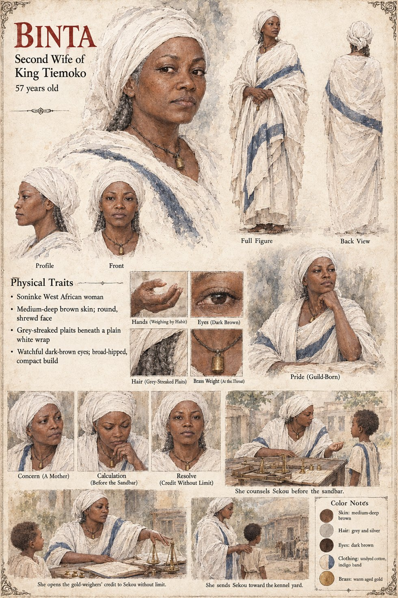

Binta
Second wife of King Tiemoko · a gold-weigher's daughter · mother of Sekou · 57 years old on her sheet
The second wife, a gold-weigher's daughter, a woman of the market rather than the lineages, who arrives with no tolls at all and a habit of asking what things cost. Raised among scales, she understands at once the arithmetic of her position: a second wife's son has, in the ordinary run of things, exactly one asset, which is to be no one's enemy. She therefore sends Sekou, from the age of six, to the only place in the palace where a boy can be useful to no faction whatever, the kennel yard, with the cold exact calculation of a woman placing a small sum where no thief would think to look and with no idea that it would compound. The beer-house of Chapter Seven says she had the dog weighed against its own weight in millet by a bribed clerk, to see whether it grew heavier with the years, which is false.
On the night of the Weighing she does her sums aloud by lamplight with a pair of traveling scales set out as her father taught her, and reaches her total faster than Awa reaches hers, because she never expected the entry to come due: she had placed a boy, not a dog, and a return that exceeded the sum placed by a margin no scale in Danjeri could take is not, to a woman raised among weights, a profit, since whatever produced it could neither be asked what it wanted nor made to account for itself. She sends no word to her son. She sends before dawn one factor of her father's guild with one instruction, that the gold-weighers' credit stand open to the second prince without limit and without mention, the largest loan of her life, and it appears in no book.
Before the sandbar the king comes to her at the gold-weighers' compound with the terms he means to offer, laid out the way a customer lays goods on a counter, and she tells him two things: that a peace bought with a king's own credit would hold exactly as long as no one mentioned the price, and that it is the only peace in the market at that figure, and that if he does not buy it someone else will, later, at a higher one, in other people's blood. Forgive it quietly, she tells him, or you will be forgiving it every year: the longest speech she ever made to him, and she does not remind him that she put him in a kennel yard at six. In the Epilogue she keeps the credit open for the rest of his reign, neither of them ever mentioning it, the most accurately kept account in Danjeri, and it was never entered anywhere.
The manuscript gives her trade-bred habits, her scales, her loan and her one speech, and no age, face or build. The sheet's age of 57, round shrewd face, grey-streaked plaits beneath a plain white wrap, watchful dark-brown eyes, broad-hipped compact build and brass weight at the throat are its own, as are its caption Pride (Guild-Born) and its panels Concern (A Mother), Calculation (Before the Sandbar) and Resolve (Credit Without Limit). Its three scenes, She counsels Sekou before the sandbar., She opens the gold-weighers' credit to Sekou without limit. and She sends Sekou toward the kennel yard., all draw Sekou as a small boy, which fits only the last: the sandbar and the credit belong to the man of thirty-six to thirty-eight.
“a peace bought with a king's own credit would hold exactly as long as no one mentioned the price”